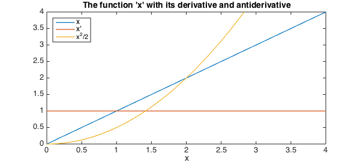
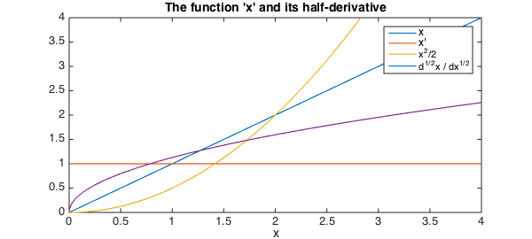
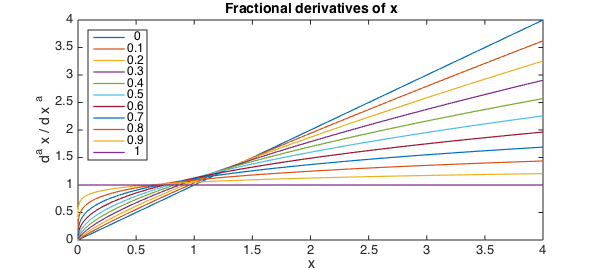
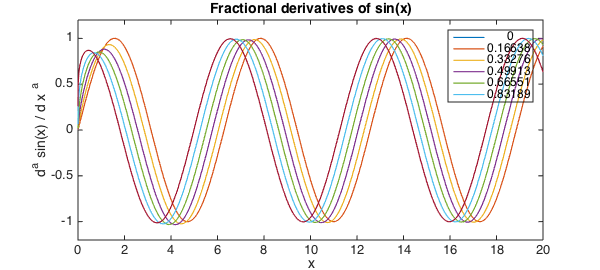
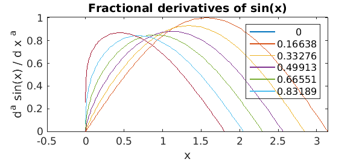
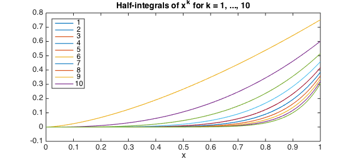
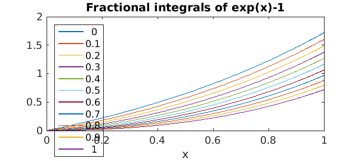

We're all familiar with the standard definitions of differentiation and integration we learnt in high-school and at undergraduate level. For example, here is the function $x$ on the interval [0,4] along with its derivative (the constant function, $1$) and antiderivative ($x^2$).
x = chebfun('x', [0, 4]);
LW = 'LineWidth'; lw = 1.2; FS = 'FontSize'; fs = 14;
plot(x, '-', diff(x), '-', cumsum(x), '-', LW, lw)
legend('x', 'x''', 'x^2/2','location','northwest')
axis([0 4 0 4]), xlabel('x', FS, fs)
title('The function ''x'' with its derivative and antiderivative', FS, fs)

Half-derivative
A natural question one might ask is whether there exists, say, a 'half-derivative' operator ${\cal H}$, such that ${\cal H}^2(f) = df(x)/dx$.
It turns out that through a generalisation of the Cauchy formula for repeated integration we can define precisely such an operator as a "Riemann-Liouville derivative" [1].
We omit here any rigorous definition of these operators, but instead demonstrate their behaviour when applied to some simple functions $f$, as well as Chebfun's ability to compute them.
Continuing where we left off above, we might ask what is the half-derivative of the function $f(x) = x$. In Chebfun this is easily computed via
xp05 = diff(x, 0.5);
hold on, plot(xp05, '-', LW, lw), axis([0, 4, 0, 4])
legend('x', 'x''', 'x^2/2', 'd^{1/2}x / dx^{1/2}','location','northwest')
xlabel('x',FS,fs); title('The function ''x'' and its half-derivative',FS,fs)

Notice here that the second argument passed to diff, which for standard calculus is a positive integer specifying the number of times to differentiate the chebfun, indicates that we wish to compute the half-derivative of x.
The plot of this half-derivative may look familiar, and in fact one can show that the half derivative of $x$ is precisely $2\sqrt{x/\pi}$, which we can verify:
f = chebfun(@(x) 2*sqrt(x/pi), [0, 4], 'exps', [0.5, 0]); norm(f - xp05, inf)
ans =
4.440892098500626e-16
Fractional differentiation
The Riemann-Liouville derivative definition above applies not only to half-powers, but to $d^a/dx^a$ for any $a > 0$.
Below we demonstrate the ($a$)th derivative of $x$ for $a$ = 1/10, 2/10, ..., 1.
close
u = x;
for alpha = 0.1:.1:1
u = [ u, diff(u(:,1), alpha) ];
plot(u, LW, lw), drawnow
end
title('Fractional derivatives of x', FS, fs)
xlabel('x', FS, fs); ylabel('d^a x / d x ^a', FS, fs)
legend(num2str((0:.1:1)'),'location','northwest')

Of course, these generalised derivatives can be applied to more complicated functions than simply the independent variable '$x$'. Here we demonstrate the behaviour of varying irrational derivatives of the trigonometric function $\sin(x)$.
close
u = chebfun('sin(x)', [0, 20]);
for alpha = sqrt(2)*(0:2:10)/17
u = [ u, diff(u(:,1), alpha) ];
plot(u, LW, lw), ylim(1.2*[-1, 1]), drawnow,
end
title('Fractional derivatives of sin(x)', FS, fs)
xlabel('x', FS, fs); ylabel('d^a sin(x) / d x ^a', FS, fs)
legend(num2str(sqrt(2)*(0:2:10)'/17))

Far away from the left-hand boundary these derivatives are essentially shifts of $x \rightarrow x + a\pi/2$ (which is consistent with the case of $a$ being an integer), but near $x = 0$ the boundary effects are more interesting.
axis([-0.5, pi, 0.0, 1.01])

Fractional integration
The definition of the Riemann-Liouville derivative can also to extended fractional integration (in fact it is sometimes referred to as the Riemann-Liouville 'differintegral' [2]). Chebfun can also handle these types of operators, here extending the definition of cumsum to allow non-integer degree.
close
x = chebfun('x', [0, 1]); u = [];
for k = 1:10;
u = [ u, cumsum(x.^k, 0.5) ];
plot(u, LW, lw), drawnow, hold on
end
title('Half-integrals of x^k for k = 1, ..., 10', FS, fs)
xlabel('x', FS, fs);
legend(num2str((1:10)'),'location','northwest')

Here's another example:
close
u = chebfun('exp(x)-1', [0, 1]);
for alpha = 0.1:.1:1
u = [ u, cumsum(u(:,1), alpha) ];
plot(u, LW, lw), drawnow
end
title('Fractional integrals of exp(x)-1', FS, fs)
xlabel('x', FS, fs);
legend(num2str((0:.1:1)'),'location','northwest')

Fractional differential equations
Unfortunately there is not yet any functionality for fractional calculus operators in the Chebop system.
References
-
Lizorkin, P.I. (2001), "Fractional integration and differentiation", http://eom.springer.de/f/f041230.htm
-
http://en.wikipedia.org/wiki/Riemann-Liouville_differintegral